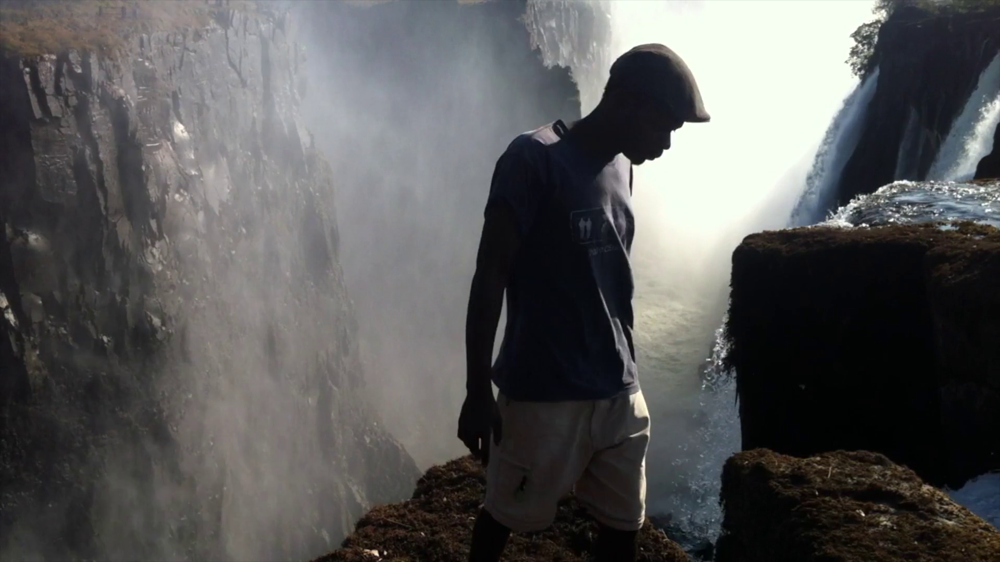
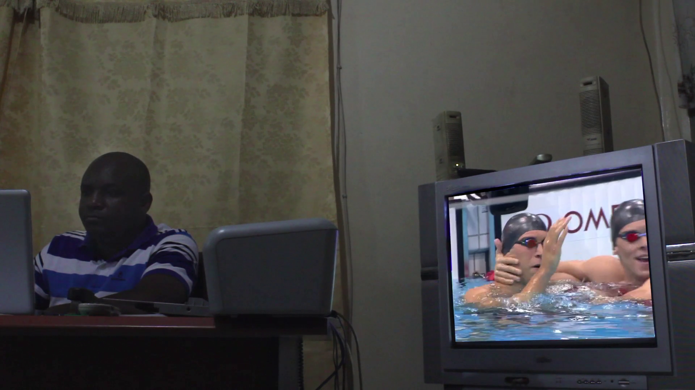
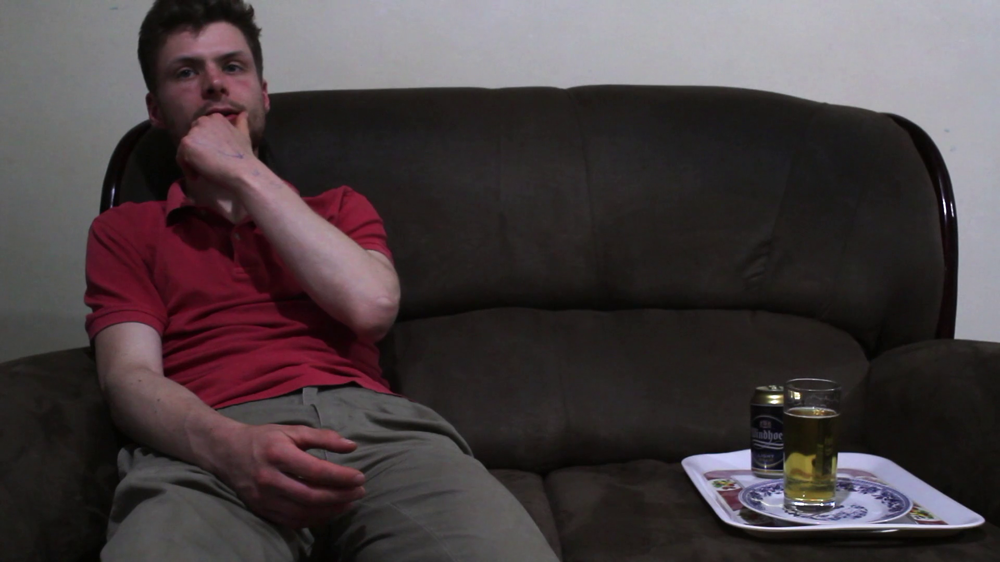
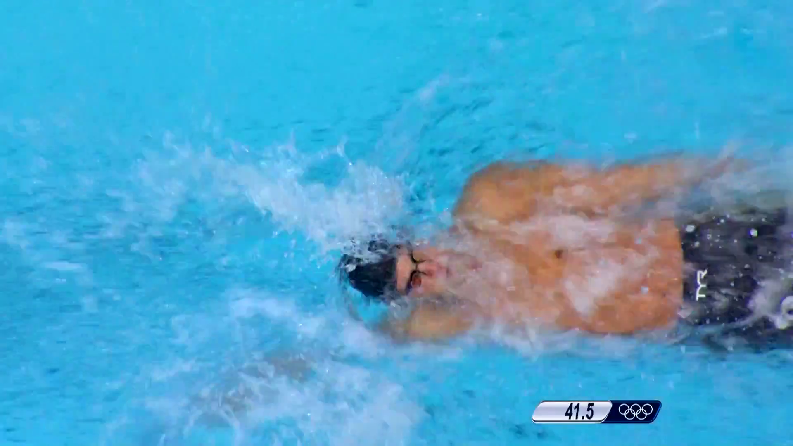
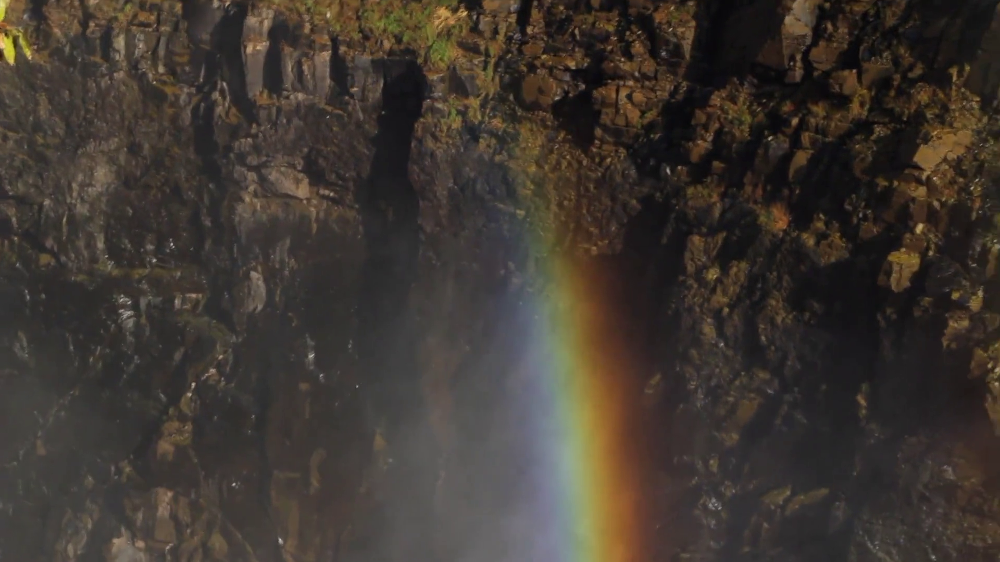

10mins, 2013
Filmed in Zambia during the London 2012 Olympics, Olympic Sized moves between two encounters. At Victoria Falls, a British filmmaker briefly hands his camera to a local guide, reversing their roles as observer and observed. Elsewhere, the same visitor watches Olympic swimming with his Zambian guesthouse host, who dreams of building a swimming pool and takes a rather more commercially minded view of competitive sport than his guest.
The film finds unexpected associations between the great waters of Victoria Falls and the regulated spectacle of the Olympic pool, while quietly exploring the relationships between those who look, those who are looked at, and the circumstances in which images are made.
Exhibited at Standpoint, London, 2013 and The Chelsea Arts Club, London, 2014
WR SAUNDERS 2014